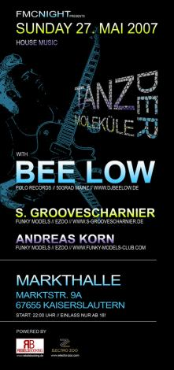
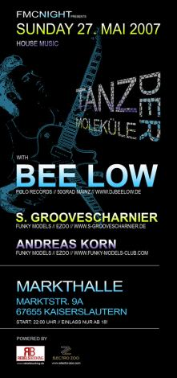

BEE LOW in der Markthalle
Am Sonntag legt BEE LOW in der Markthalle auf. Mit dabei sind Groovescharnier sowie Andreas Korn
{kind=link}
Einlass ab 22.00 Uhr
Am Sonntag legt BEE LOW in der Markthalle auf. Mit dabei sind Groovescharnier sowie Andreas Korn
Einlass ab 22.00 Uhr
 Leo hat die Bilder vom Permanent Breakfast am Stiftsplatz online gestellt. Vielen Danke noch einmal an Alle die mitgemacht haben – lecker wars!
Leo hat die Bilder vom Permanent Breakfast am Stiftsplatz online gestellt. Vielen Danke noch einmal an Alle die mitgemacht haben – lecker wars!
 Um der Trostlosigkeit des Stiftsplatz in Kaiserlautern endlich ein Ende zu setzen, kommt von Lebe deine Stadt die Idee Insel ähnliche Sitzgelegenheiten aufzustellen.
Um der Trostlosigkeit des Stiftsplatz in Kaiserlautern endlich ein Ende zu setzen, kommt von Lebe deine Stadt die Idee Insel ähnliche Sitzgelegenheiten aufzustellen.
Ich finde das ist ne super Idee. Damit unser Oberbürgermeister das auch mal rafft, hier die Promotion Postkarte zum Ausdrucken und ans Rathaus schicken!
Die ganze Story bei Lebe deine Stadt

Am Donnerstag schmeisst die FS Physik im Foyer 46 wieder die legendäre Maifete! Natürlich wieder mit Biergarten ab 16.00 Uhr und Crocodoc!
Im Rahmen des Semesterthemas WASSER findet am Mittwoch, um 16 Uhr eine Exkursion zur Lauterspring. Hier gewinnt die Stadt Kaiserslautern seit vielen Jahrzehnten einen Teil ihres Trinkwassers.
Neben Einblicken in die historische Nutzung werden Vogel- und Insektenwelt sowie Amphibien-Wanderungshilfen Schwerpunkte der Exkursion sein, die von PD Dr. Hans-Wolfgang Helb geleitet wird. Quelle: RHRK Newsletter
Anmeldungen an zamani@rhrk.uni-kl.de
Am Mittwoch läd der AStA zum MultiKulti Grill beim Kramladen ein. Neben Würstchen und Bier werden hier vor allem ausländischen Studenten Rat & Tipps rund ums Studium gegeben.
Näheres steht auf der AStA Wand (“Ausländer”).
 Am Dienstag findet wieder die TREFFPUNKT Firmenkontaktmesse statt. Es werden sich zahlreiche Firmen für interessierte Studenten im Foyer 42 der TU Kaiserslautern versammeln um sich in entspannter Atmosphäre gegenseitig kennen zu lernen.
Am Dienstag findet wieder die TREFFPUNKT Firmenkontaktmesse statt. Es werden sich zahlreiche Firmen für interessierte Studenten im Foyer 42 der TU Kaiserslautern versammeln um sich in entspannter Atmosphäre gegenseitig kennen zu lernen.
http://www.treffpunkt-kl.de
Nach 10 Tagen Spaß & Freude geht die Kaiserslauterer Maikerwe am Montag Abend mit einem Abschlussfeuerwerk zu Ende. Weiter geht’s dann wieder im Oktober…
Frei nach dem großen Vorbild aus Berlin, wird am Sonntag, 15.00 Uhr der McDonalds in der Fußgängerzone gestürmt! Mitmachen, Weitersagen & Guten Appetit!
http://www.hamburger-sturm.de/
 Am Tag der offenen Tür der TU Kaiserslautern gibt Virak Chhuor um 15:30 Uhr im Audimax ein Klavierkonzert. Neben Stücken von Schubert, Chopin und Brahms spielt er auch eigene Kompositionen.
Am Tag der offenen Tür der TU Kaiserslautern gibt Virak Chhuor um 15:30 Uhr im Audimax ein Klavierkonzert. Neben Stücken von Schubert, Chopin und Brahms spielt er auch eigene Kompositionen.
Der Eintritt ist frei.
http://www.uni-kl.de/wcms/1621.html